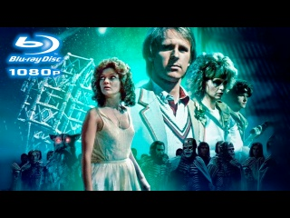
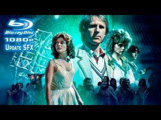
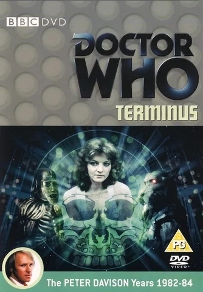
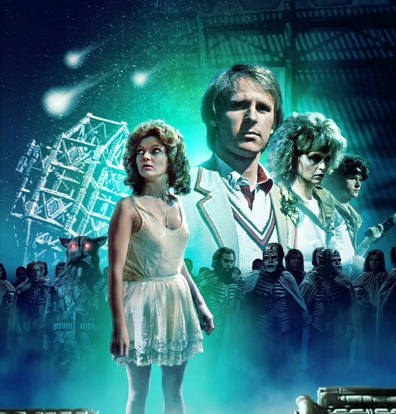
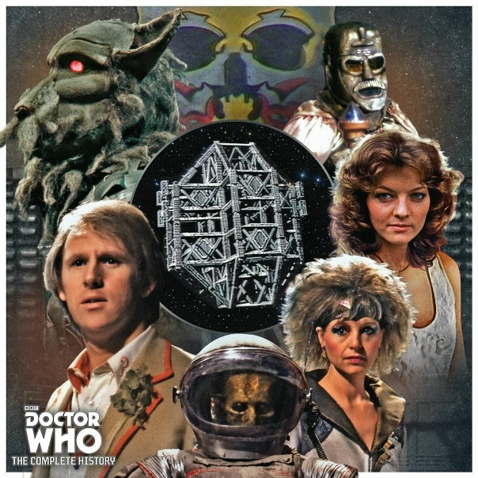

Субтитры: Русские и Английские |  |
|---|---|
с обновленными спецэффектами Субтитры: Русские и Английские |  |
с обновлением визуальных эффектов (cunningmunki) Субтитры: отсутствуют | над серией] |
Terminus
Дата выхода: 15-23 февраля 1983
Формат: 4 эпизода по 25 мин.
| |
Вторая часть трилогии Чёрного Стража. Турлоу, всё ещё под влиянием тёмной силы, выводит ТАРДИС из строя — и она аварийно стыкуется с космическим кораблём, идущим неизвестным курсом. На борту — лазари, заражённые болезнью, похожей на проказу, которых везут на станцию Терминус в центре вселенной. Корпорация обещает лекарство, но оттуда никто не возвращался. Нисса заражается, а Доктор обнаруживает, что Терминус хранит тайну, грозящую гибелью всей вселенной.
Последняя серия с тремя постоянными спутниками — в следующий раз такая команда соберётся только в 2018 году. Имена многих персонажей взяты из скандинавской мифологии — ваниры, Гарм. А Нисса в этой серии остаётся без юбки — по сюжету из-за жара от болезни, но Сара Саттон позже призналась, что это был фансервис: фанаты долго жаловались на слишком закрытый костюм героини.
VHS - январь 1993 |   DVD+Boxset - 10 августа 2009 |  Blu-ray - 18 сентября 2023 * Версия в нашей группе |
|---|

